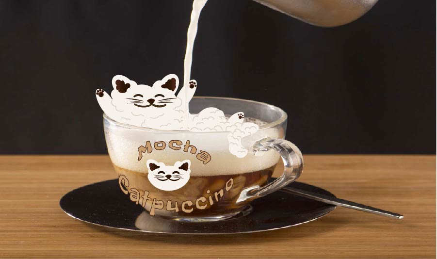

Home ✨ Raster ✨ Vector ✨ Time Based Media ✨ Print Layout ✨ About the Artist ✨
Illustrator was a bit challenging.I struggled creating my character and getting everything to look right. I did enjoy working with it but it did take me a minute to get a handle on it.